Komma igång
Att skapa ett program
De olika flikarna representerar olika typer av block som du använder för att skapa ditt program. När du klickar på de olika flikarna kan du se de olika blocken som finns.
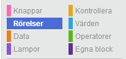Om du till exempel klickar på Rörelse, kan du se de block som gör att roboten rör på
sig, såsom framåt, bakåt och sväng.
För att skapa ett program, klickar du helt enkelt på ett block och drar den till arbetsytan där du sedan
släpper den.
Vanligtvis börjar du med ett När - trycks på block. Det markerar starten på ditt program och avgör vilken knapp som säger till PedaGogon att börja köra ditt program. Det finns tre knappar att välja mellan; grön, blå eller gul.
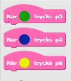Du kanske har sett att det även finns en röd knapp på PedaGogon, den här knappen kommer förklaras
senare.
Du kan se på formen på blocken hur de passar ihop med varandra. När du drar blocken nedanför eller inuti
andra block så läggs de på plats automatiskt.
Loopar

De orangea blockan som du ser ovan kallas loopar. De här kan användas för att upprepa delar av ditt program. Om du till exempel vill snurra runt fyra gånger så använder du ett upprepande block och ändrar värdet i blocket till 4.

För att ändra värdet i ett block, dubbelklicka på värdet och skriv in ett nytt!
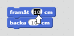Upprepa föralltid blocket kommer upprepa blocken som placerats innuti, eller tills du avbryter programmet. Upprepa tills - stämmer blocket har ett tomrum format som en diamant. Blocken som passar här hittar du under fliken Operatorer.
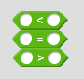För att kunna använda de här blocken behöver du veta mer om variabler.
Variabler
Variabler används för att lagra information, till exempel kan de användas som räknare. Det kan användas i loopar: istället för att ändra värdet i ett upprepa block, kan du använda ett upprepa tills - stämmer som i bilden nedan.
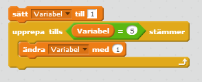Det finns inga färdiga variabler när du börjar programmera, du måste själv skapa dem. För att göra detta, klicka på Data fliken och sedan på Skapa en variabel knappen.
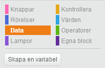Du ska sedan döpa din variabel. Försök att tänka ut namn som gör det lätt att komma ihåg vad de används till. Till exempel AntalVarv eller GångerKvar. När du har skapat din variabel, kommer det finnas några nya block som du kan avända.
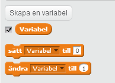Med blocket som heter sätt - till, bestämmer du startvärdet på din variabel. Om du då till exempel vill räkna uppåt så bör den börja på 0, och om du vill räkna neråt så s&sumltter du dess värde till det du vill räkna ner ifrån. Med blocket som heter ändra - med bestämmer du hur mycket värdet på din variabel ska förändras varje gång. Så om du räknar uppåt bör värdet ändras med 1 varje gång.
Variabler används också i villkor som förklaras i nästa delkapitel.
Villkorligt
Ett villkor i programmering är när du säger: Om det här händer, gör såhär. Så du kan till exempel använda variabler för att säga: om hastigheten nå max, minska hastigheten. Det görs genom att anv¨nda de orangea blocken som heter något med om och finns under Kontrollera fliken. Nedan kan du se ett exempel.
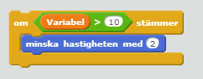Det här betyder att om värdet av variablen, som i det här fallet skulle kunna vara hastigheten, är större än 10, minska hastigheten med 2.
Det finns även ett om-stämmer-annars block som skulle kunna användas i exemplet ovan genom att säga till roboten att göra något annat om hastigheten inte är större än 10. Nedan ser ni ett exempel till som säger att hastigheten ska ökas med 2 om hastigheten är mindre än 10.
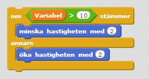Listor
Listor används för att hålla vaiabler i en särskild ordning. Du kan lägga till och ta bort element från listan men också byta ut element i listan mot andra värden eller variabler. Du kan också kolla om en given lista innehåller ett visst värde eller ej.
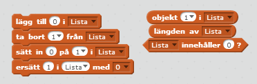Som med variabler, så finns det inga färdiga listor utan du måste skapa dessa sjäv. Det gör du i samma flik som variablerna, Data, men klickar istället på Skapa en lista knappen och döper sedan din lista.
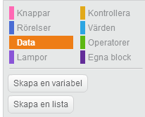Sedan kan du börja lägga till värden eller variabler till din lista genom att använda lägga till - i blocket. Den lägger till dina element längst bak i listan. Du kan även använda sätt in - på - i blocket som bestämmer var i listan som elementet ska sättas in.
Du kan se ett exempel på hur listor kan användas nedan.
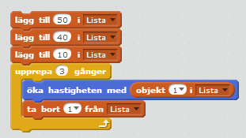Programmet du ser ovan kommer lägga till värdena 50, 40 och 10 till listan, som döpts till Lista, i den ordningen. Den kommer sedan ändra hastigheten med det f&oursta värdet i listan, 50, sedan ta bort det värdet ur listan. I nästa varv, loop, kommer då det första värdet att vara 40. Så kommer den göra 3 gånger så att den sista hastighetsförändringen kommer vara 10, sedan kommer listan att vara tom.
Operatorer
Operatorer är de gröna block som finns i Operatorer fliken. De kan användas med egenskrivna värden eller med variabler.
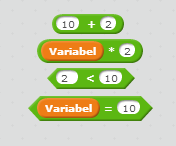I bilden nedan kan du se några exempel på hur du kan använda operatorer.
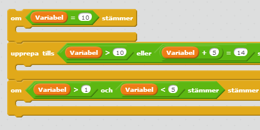I det första om blocket finns det en lika med operator som säger att värdet på
variabeln bör vara 10. I upprepa tills blocket finns det en eller operator som säger att värdet
på variabeln ska antingen vara större än 10, eller, så ska värdet plus 5 vara lika med 14.
Loopen kommer att upprepas tills något av de två är sanna.
I nästa om block finns det en och operator. Den säger att värdet på variabeln ska vara
större än 1, och, värdet ska vara mindre än 5. Alltså för att det här ska vara sant så
måste värdet på variabeln vara mellan 1 och 5.
Mod operatorn är lite svårare att förstå. Den används för att kolla om en siffra är jämnt delbar med en annan. Till exempel är 9 jämnt delbart med 3, och 10 är jämnt delbart med 5. Om det första talet är jämnt delbart med det andra så kommer resultatet av mod operatorn att vara 0. Det kan användas för att till exempel kolla om ett värde eller en variabel är udda eller jämn, som i exemplet nedan.
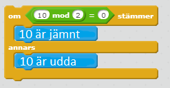Att ladda över ditt program till PedaGogo
Du kommer att behöva ett USB minne. När du känner dig nöjd med ditt program och vill testa att köra det i roboten, behöver du bara trycka på Arkiv och sedan Ladda ner till din dator eller usb-minnet för PedaGogo.

Sen behöver du bara stoppa in USB minnet i roboten och trycka på den röda knappen. Då kommer ditt program att laddas upp på roboten och sedan är det bara att köra igå genom att trycka på den knapp som du har valt att starta ditt program med!
Du kan även ladda upp ett projekt, på så sätt kan du spara alla dina program och ädra i dom som du vill!
Rörelse
Öva Öva! Läs lite om Riktning och Hastighet nedan för att klara föjande uppgifter.
Riktning och Hastighet
Hastigheten kan ändras genom att ändra värdet i hastighetsbocken. Att förändra värdet med 1 innebär ... Max hastighet är... Min hastighet är... jadajadajada!
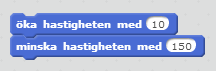För att få roboten att svänga, använd blocken som heter rotera, antingen till höger eller till vänster. Ändra värdet i blocken för att svänga olika mycket. Nedan kan du se några exempel på gradtal som kan anvädas.
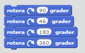Nedan följer några exempel på hur roboten svänger beroende på gradtalet.

Om du vill att roboten ska svänga runt en specifik vinkel, som när du vill svänga i en triangel, kom ihåg att beräkna vinkeln så här:

Du kan öva dina kunskaper med föjande uppgifter
Uppgift 1: Hastighet
1. Försök att ändra hastigheter från den minsta till den maximala hastigheten genom att använda öka hastighet blocket, testa gärna några olika hastighetsförändringar för att kolla hur stor skillnaderna är.

2. Den här gången ska du försöka att använda en loop för att stegvis öka hastigheten till max, och sedan en ny loop som minskar hastigheten tillbaka till minimum.
Kom ihåg: den maximala hastigheten är 255 (?) och den minimala hastigheten är ??.
Uppgift 2: Figurer
1.Använd roterablocken för att styra roboten i en fyrkant och testa sedan att styra den i en cirkel.
Försök att använda loopar för att klara den här uppgiften.
Hint:En cirkel är som en fyrkant men med många fler hörn.

2.Den här gången ska du försöka att anväda roterablocken för att styra roboten i en triangel. Först med tre lika stora vinklar och sedan med tre olika stora vinklar.
Kom ihåg: hur du beräknar vinklarna
Uppgift 3: SickSack
1.Använd nu vad du lärt dig om vinklar för att styra roboten framåt i sicksack. Glöm inte att försöka använda en loop!

2.Den här gången ska du få roboten att slingra sig framåt, som en orm.

Hint: du kan använda halvcirklar i svängarna.
Uppgift 4: Variabler
1.I den här uppgiften ska du skapa en variabel. Döp den till Hastighet och sätt den till 200. Precis som i uppgift 2.1, använd en loop för att öka hastigeten från minimum. Den här gången får hastigheten bara nå 200, anväd dig av din nya variabel för att åstadkomma det här.
Kom ihåg: variabler kan placeras innuti de diamantformade blocken som passar bra i vissa loopar.
2.Den här gången ska du skapa en variabel AntalVarv och sätta den till 5. Skapa ett program som styr din robot runt fem varv genom att använda din nya variabel.

Hint: varibler kan även förändras med -1.
Uppgit 5: Listor
1. I den här uppgiften behöver du skapa en lista. Döp den till Hastigheter och lägg till fem värden (hastigheter). Skapa nu ett program som antingen ökar eller minskar hastigheten med de värden som finns i din lista.
 Hint: använd en loop och de block som du får med din nya lista.
Hint: använd en loop och de block som du får med din nya lista.
2.Den här gången ska du skapa en lista som innehåller värden som kan styra roboten i en fyrkant. Glöm inte att använda en loop!
Hint: du behöver bara lägga till två värden; antal cm framåt och antalet grader du ska svänga. Genom att klicka på pilen i blocket kan du väja att anväda värdet som ligger först eller det som ligger sist i din lista. 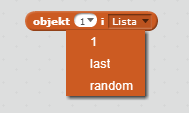Uppgift 6: Uppdrag
Din uppgift nu är att klara att programmera följande bana, lycka till!
En bana som kombinerar saker de lärt sig men med något svårare moment typ
Lysen
Öva Öva!
Snacka om lamporna, vad roligt så roligt, man kan han med dom!!
You can practise your skillzzz by completing the following tasks! Enjoooy!
Uppgift 1: Blinka
1. Använd tänd och släck blocken för att blinka med lysena fem gånger. Använd en loop!
Hint: Om lysena blinkar för snabbt, använd ett vänta block emellan!
2. Den här gången ska du blinka med varannan lampa fem gånger var.
Uppgift 2: Variabler
1. Använd upprepa blocket och en variabel. Döp variabeln till antalBlink och anväd den för att blinka med lysena 10 gånger.
Kom ihåg: hur du skapar en variabel2. Den här gången ska du anväda samma variabel men upprepa tills bocket f¨r att blinka men varannan lampa 10 gånger.
Uppgift 3: Figurer
1. I uppgift 2 i rörelse kapitlet skulle du skapa ett program som styr roboten i en fyrkant. Gör det igen men lägg till att lysena ska blinka två gånger före varje sväng.
2. Den här gången ska du återskapa programmet som styr roboten framåt i sicksack och lägga till två blinkningar av lysena före varje sväng. Blinka endast med lyset som visar åt vilket håll du skall svänga.
Uppgift 4: Villkor
1. Sätt antalBlink till 0. Loopa följande 10 gånger: öka värdet på variabeln med 1, kolla om den är större än 0 och mindre än 5, i så fall ska du blinka med det vänstra lyset 3 gånger. Annars, blinka med högra 3 gånger.

2. Den här gången ska du göra samma sak men istället kolla om din variabel är ett jämnt tal och i så fall blinka med det vänstra lyset, är det ett udda tal ska du blinka med högra lyset. Gör även detta 10 gånger.
Kom ihåg: hur du kollar om det är ett jämnt tal kommerfinnaslänkhär!Uppgift 5: Listor
1. Den här uppgiften är som uppgift 4.2 men du kommer att behöva en lista. Sätt antalBlink till 1 och loopa följande 10 gånger: lägg till antalBlink i listan och öka sedan värdet med 1. Sedan ska du, med en till loop, kolla om första elementet i listan är mindre än 5 och i så fall blinka med vänstra lyset. Annars ska du blinka med det högra lyset. Ta sedan bort det första elementet ur listan. Gör detta (andra loopen) tills listan är tom.
Kom ihåg: hur du skapar en lista.Hint: när en lista är tom så är längden på listan 0.
2. Den här gången ska du kolla om första elementet är ett jämnt tal och i så fall blinka med vänstra lyset. Annars, om det är udda, ska du blinka med högra lyset.
Uppgift 6: Uppdrag
Din uppgift nu är att klara att programmera föjande bana, lycka till!
En bana som kombinerar saker de lärt sig men med något svårare moment typ